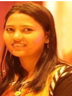

Welcome
Dr. Dipika Digdarshini Pradhan is a dedicated researcher and educator in the field of Electronics and Telecommunication Engineering. She received her Ph.D. in Electronics from Sardar Vallabhbhai National Institute of Technology (SVNIT), Surat. Her research focuses on Artificial Intelligence,Machine learning,deep learning,IOT, nanomaterials, photonic biosensors and wearable sensors.

Professional Experience
Education
- Ph.D. (Electronics) - Sardar Vallabhbhai National Institute of Technology (SVNIT), Surat
- Optiwave, COMSOL Multiphysics
- MATLAB and Python Programming
- Fiber Optics and Optical Communication
- Nanomaterials Research
- Teaching and Mentoring